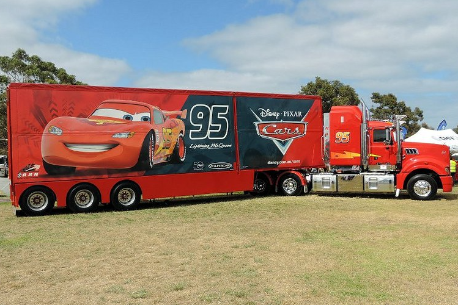
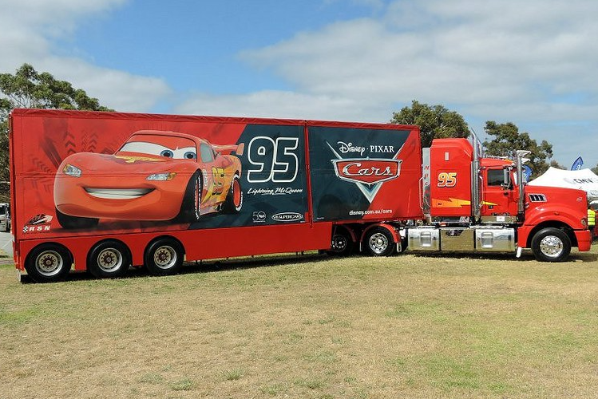
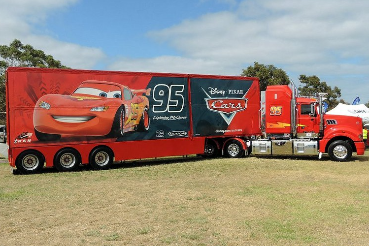
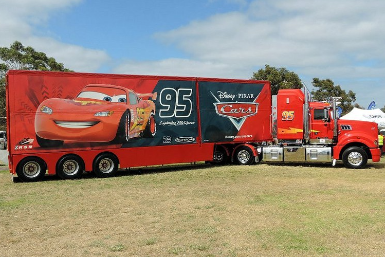

Mack is Lightning McQueen's transporter and one of his longest friends. Mack and McQueen work for the Rust-eze team in the Piston Cup Racing Series, with Mack bringing McQueen to all of his races. Mack became Lightning's transporter after he recommended McQueen to Rusty and Dusty Rust-eze when they were searching for a new spokescar.